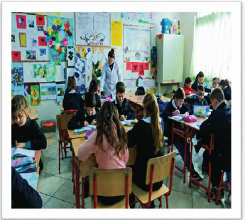
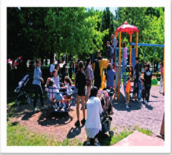

Jam qytetar me të drejta dhe përgjegjësi

nxënës i përgjegjshëm në shkollë
a.
Detyra a: nxënës i përgjegjshëm në shkollë
b.
Detyra b: nxënës i përgjegjshëm në shkollë

fëmijë i përgjegjshëm në komunitet.
c.
Detyra c: fëmijë i përgjegjshëm në komunitet
ç.
Detyra ç: fëmijë i përgjegjshëm në komunitet